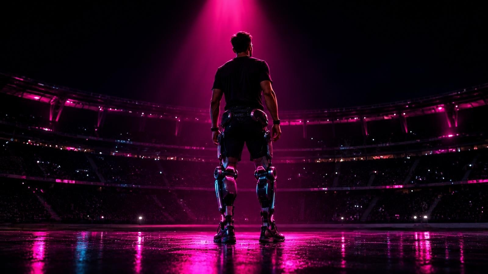
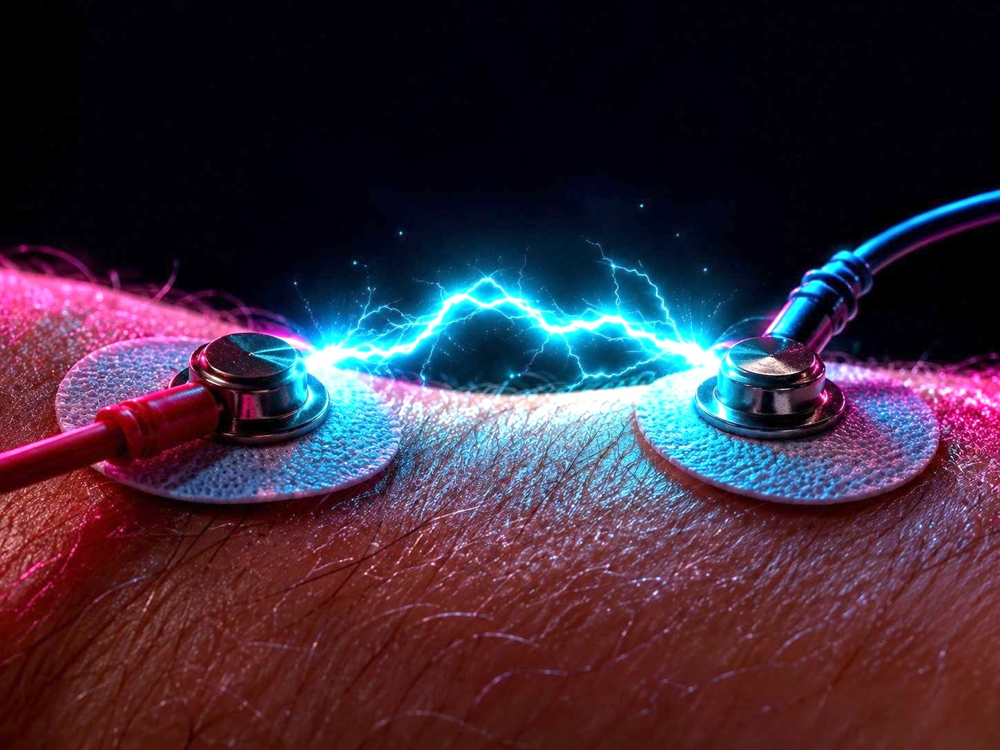

Bienvenue dans l'aventure !
De l'impulsion à l'étincelle
un exosquelette pour l'avenir
Manifeste
De l'impulsion à l'étincelle
Une lésion C6-C7 incomplète n'efface pas tout : l'ordre de mouvement part encore, et l'influx se fait sentir. Ce projet est né d'une image vue à la télévision, et il avance depuis, un composant à la fois.

Le déclic : 12 juin 2014
Coupe du monde, São Paulo. Un patient paraplégique se lève de son fauteuil et donne le coup d'envoi, porté par l'exosquelette du Dr Miguel Nicolelis. Des millions de personnes voient la scène ; une seule décide que ce sera sa vie.
L'idée mûrit pendant des années, sans laboratoire ni budget — juste une conviction et un carnet. Puis l'IA arrive, la machine de calcul se monte, et la Phase 1 devient possible : un banc d'essai mesurable, ouvert, publié.

Orientation
Le chemin, étape par étape
Chaque tiroir du site correspond à une étape du projet. Tu peux les lire dans l'ordre, ou sauter à celle qui t'intéresse.
Soutenir
Ko-fi · Tipeee · GitHub Sponsors — trois canaux ouverts, sans tout-ou-rien.